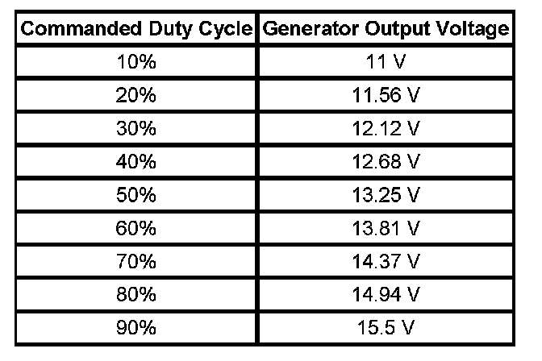

Charging System Description and Operation
CHARGING SYSTEM DESCRIPTION AND OPERATION
ELECTRICAL POWER MANAGEMENT (EPM) OVERVIEW
The electrical power management (EPM) system is designed to monitor and control the charging system and send diagnostic messages to alert the driver of possible problems with the battery and generator. This EPM system primarily utilizes existing on-board computer capability to maximize the effectiveness of the generator, to manage the load, improve battery state-of-charge and life, and minimize the system's impact on fuel economy. The EPM system performs 3 functions:
- It monitors the battery voltage and estimates the battery condition.
- It takes corrective actions by boosting idle speeds, and adjusting the regulated voltage.
- It performs diagnostics and driver notification.
The battery condition is estimated during ignition-off and during ignition-on. During ignition-off the state-of-charge (SOC) of the battery is determined by measuring the open-circuit voltage. The SOC is a function of the acid concentration and the internal resistance of the battery, and is estimated by reading the battery open circuit voltage when the battery has been at rest for several hours.
The SOC can be used as a diagnostic tool to tell the customer or the dealer the condition of the battery. Throughout ignition-on, the algorithm continuously estimates SOC based on adjusted net amp hours, battery capacity, initial SOC, and temperature.
While running, the battery degree of discharge is primarily determined by a battery current sensor, which is integrated to obtain net amp hours.
In addition, the EPM function is designed to perform regulated voltage control (RVC) to improve battery SOC, battery life, and fuel economy. This is accomplished by using knowledge of the battery SOC and temperature to set the charging voltage to an optimum battery voltage level for recharging without detriment to battery life.
The Charging System Description and Operation is divided into 3 sections. The first section describes the charging system components and their integration into the EPM. the second section describes charging system operation. The third section describes the instrument panel cluster (IPC) operation of the charge indicator, driver information center (DIC) messages, and voltmeter operation.
CHARGING SYSTEM COMPONENTS
Generator
The generator is a serviceable component. If there is a diagnosed failure of the generator it must be replaced as an assembly. The engine drive belt drives the generator. When the rotor is spun it induces an alternating current (AC) into the stator windings. The AC voltage is then sent through a series of diodes for rectification. The rectified voltage has been converted into a direct current (DC) for use by the vehicles electrical system to maintain electrical loads and the battery charge. The voltage regulator integral to the generator controls the output of the generator. It is not serviceable. The voltage regulator controls the amount of current provided to the rotor. If the generator has field control circuit failure, the generator defaults to an output voltage of 13.8 volts.
Body Control Module (BCM)
The body control module (BCM) is a GMLAN device. It communicates with the engine control module (ECM) and the instrument panel cluster (IPC) for electrical power management (EPM) operation. The BCM determines the output of the generator and sends the information to the ECM for control of the generator field control circuit. It monitors the generator field duty cycle signal circuit information sent from the ECM for control of the generator. It monitors a battery current sensor, the battery positive voltage circuit, and estimated battery temperature to determine battery state of charge (SOC). The BCM sends idle boost requests to the ECM.
Battery Current Sensor
The battery current sensor is a serviceable component that is connected to the negative battery cable at the battery. The battery current sensor is a 3-wire hall effect current sensor. The battery current sensor monitors the battery current. It directly inputs to the BCM. It creates a 5-Volt pulse width modulation (PWM) signal of 128 Hz with a duty cycle of 0-100 percent. Normal duty cycle is between 5-95 percent. Between 0-5 percent and 95-100 percent are for diagnostic purposes.
Engine Control Module (ECM)
The ECM directly controls the generator field control circuit input to the generator. The ECM receives control decisions based on messages from the BCM. It monitors the generators generator field duty cycle signal circuit and sends the information to the BCM.
Instrument Panel Cluster (IPC)
The IPC provides a means of customer notification in case of a failure and a voltmeter. There are 2 means of notification, a charge indicator and a driver information center (DIC) message of SERVICE BATTERY CHARGING SYSTEM.
Charging System Operation
The purpose of the charging system is to maintain the battery charge and vehicle loads. There are 6 modes of operation and they include:
- Battery Sulfation Mode
- Charge Mode
- Fuel Economy Mode
- Headlamp Mode
- Start Up Mode
- Voltage Reduction Mode

The engine control module (ECM) controls the generator through the generator turn on signal. It monitors the generator performance though the generator field duty cycle signal circuit. The signal is a 5-Volt pulse width modulation (PWM) signal of 128 Hz with a duty cycle of 0-100 percent. Normal duty cycle is between 5-95 percent. Between 0-5 percent and 95-100 percent are for diagnostic purposes. The table shows the commanded duty cycle and output voltage of the generator.
The generator provides a feedback signal of the generator voltage output through the generator field duty cycle signal circuit to the ECM. This information is sent to the body control module (BCM). The signal is a 5-Volt PWM signal of 128 Hz with a duty cycle of 0-100 percent. Normal duty cycle is between 5-99 percent. Between 0-5 percent and 100 percent are for diagnostic purposes.
Battery Sulfation Mode
The BCM will enter this mode when the interpreted generator output voltage is less than 13.2 volts for 45 minutes. When this condition exists the BCM will enter Charge Mode for 2-3 minutes. The BCM will then determine which mode to enter depending on voltage requirements.
Charge Mode
The BCM will enter Charge Mode when ever one of the following conditions are met.
- The wipers are ON for more than 3 seconds.
- GMLAN (Climate Control Voltage Boost Mode Request) is true, as sensed by the HVAC control head. High speed cooling fan, rear defogger and HVAC high speed blower operation can cause the BCM to enter the Charge Mode.
- The estimated battery temperature is less than 0°C (32°F).
- Battery State of Charge is less than 80 percent.
- Vehicle Speed is greater than 145 kph (90 mph)
- Current Sensor Fault Exists
- System Voltage was determined to be below 12.56 volts
- Tow/Haul Mode is enabled
When any one of these conditions is met, the system will set targeted generator output voltage to a charging voltage between 13.9-15.5 volts, depending on the battery state of charge and estimated battery temperature.
Fuel Economy Mode
The BCM will enter Fuel Economy Mode when the ambient air temperature is at least 0°C (32°F) but less than or equal to 80°C (176°F), the calculated battery current is less than 15 amps and greater than -8 amps, and the battery state of charge (SOC) is greater than or equal to 80 percent. Its targeted generator output voltage is the open circuit voltage of the battery and can be between 12.5-13.1 volts. The BCM will exit this mode and enter Charge Mode when any of the conditions described above are present.
Headlamp Mode
The BCM will enter Headlamp Mode when ever the headlamps are ON (high or low beams). Voltage will be regulated between 13.9-14.5 volts
Start Up Mode
When the engine is started the BCM sets a targeted generator output voltage of 14.3 volts for 30 seconds.
Voltage Reduction Mode
The BCM will enter Voltage Reduction Mode when the calculated battery temperature is above 0°C (32°F). The calculated battery current is less than 1 amp and greater than -7 amps, and the generator field duty cycle is less than 99 percent. Its targeted generator output voltage is 13 volts. The BCM will exit this mode once the criteria are met for Charge Mode.
INSTRUMENT PANEL CLUSTER (IPC) OPERATION
Charge Indicator Operation
The instrument panel cluster (IPC) illuminates the charge indicator and displays a warning message in the driver information center (DIC) when the one or more of the following occurs:
- The engine control module (ECM) detects that the generator output is less than 11 volts or greater than 16 volts. The IPC receives a GMLAN message from the ECM requesting illumination.
- The BCM determines that the system voltage is less than 11 volts or greater than 16 volts.
- The IPC receives a GMLAN message from the body control module (BCM) indicating there is a system voltage range concern.
- The IPC performs the displays test at the start of each ignition cycle. The indicator illuminates for approximately 3 seconds.
- The ignition is ON, with the engine OFF.
Battery Voltage
The IPC displays the system voltage as received from the BCM over the GMLAN serial data circuit. If there is no communication with the BCM then the gauge will indicate minimum.
SERVICE BATTERY CHARGING SYSTEM
The BCM and the ECM will send a GMLAN message to the DIC for the SERVICE BATTERY CHARGING SYSTEM message to be displayed. It is commanded ON when a charging system DTC is a current DTC. The message is turned OFF when the conditions for clearing the DTC have been met.